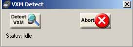

I.) Setting up your system for the 1st time
The 1st time that COSMOS is run (typically immediately after install), COSMOS will detect the port and settings to correctly communicate with the VXM.
In order for this option to correctly establish communications, the VXM must be connected and turned on.
If the VXM is not connected and powered up at the time COSMOS is scanning, then you can abort the scan and start over by selecting “Tools-->Wizard”, and the software will again attempt to assist in the setting up of your system.
Setting up your system via COSMOS wizard
To set up your system via the wizard, go to “Tools-->Wizard” and COSMOS will begin to search your computer for the correct port and settings that the VXM will reply to.
The Auto-Detect window will appear as seen below and will automatically begin to scan for the port and communication parameters to match the settings in the VXM (typically the Port would be Com1 and the Baudrate would be 9600)

B.) Configuring Axis
Once that COSMOS has detected the port and settings to communicate, it will then walk you through the process of configuring each axis to match the motor and the slide (or rotary) system that matches that axis
Typically your settings would be a Vexta motor for smaller motors, and Superior for larger motors, but in the case that your motor is not one of the typical motors then you can do the following:
Press the question mark button for help
Open the “All Possible Motor Configs.ini” file
Locate your motor in the list (If your motor is not found in this file then see Motor Settings Calculator to determine the setting for your motor)
In the form for Axis settings, select the “Set By:” box and choose “Motor Setting” and then select the motor setting value that you located in the motor listing (Example seen below)

In
the limits box, select the type of slide (or rotary) system that you
have attached to the axis that you are configuring. (Typically this
will be either “Velmex Slide” or “Velmex Rotary
Table”)
To verify you have your settings correct then press the “Test Motor” button.
a.) In a moment your motor will move 1 revolution positive and 1 revolution negative. If your motor moves correctly withought “stalling” then answer Yes to the messagebox that appears.

b.) You will then be asked if you wish to keep these settings. If you select Yes then COSMOS will save the settings to the VXM, if you select No then you will have to set up this axis again before the motor will operate properly.

Repeat this process for all the axis you have attached to the VXM.
Setting up your system manually
1.) To set your port manually go to “Tools-->Setup Communications” and then select either “AutoDetect VXM” or “Manually Set VXM Communications”
2.) If you chose Autodetect then press the “Detect VXM” button and COSMOS will attempt to detect the Serial Port and Baudrate that the VXM responds to. If you chose to set manually then you will have to correctly choose these settings for yourself. (Typically Serial Port = Com1 and Baudrate = 9600)
Once that COSMOS has detected the port and settings to communicate, it will then walk you through the process of configuring each axis to match the motor and the slide (or rotary) system that matches that axis
Typically your settings would be a Vexta motor for smaller motors, and Superior for larger motors, but in the case that your motor is not one of the typical motors then you can do the following:
1.) Press the question mark button for help
2.) Open the “All Possible Motor Configs.ini” file
3.) Locate your motor in the list (If your motor is not found in this file then see Motor Settings Calculator to determine the setting for your motor)
4.) In the form for Axis settings, select the “Set By:” box and choose “Motor Setting” and then select the motor setting value that you located in the motor listing (Example seen below)
5.)
In the limits box, select the type of slide (or rotary) system that
you have attached to the axis that you are configuring. (Typically
this will be either “Velmex Slide” or “Velmex
Rotary Table”)
6.) To verify you have your settings correct then press the “Test Motor” button.
a.) In a moment your motor will move 1 revolution positive and 1 revolution negative. If your motor moves correctly withought “stalling” then answer Yes to the messagebox that appears.
b.) You will then be asked if you wish to keep these settings. If you select Yes then COSMOS will save the settings to the VXM, if you select No then you will have to set up this axis again before the motor will operate properly.
7.) Repeat this process for all the axis you have attached to the VXM.